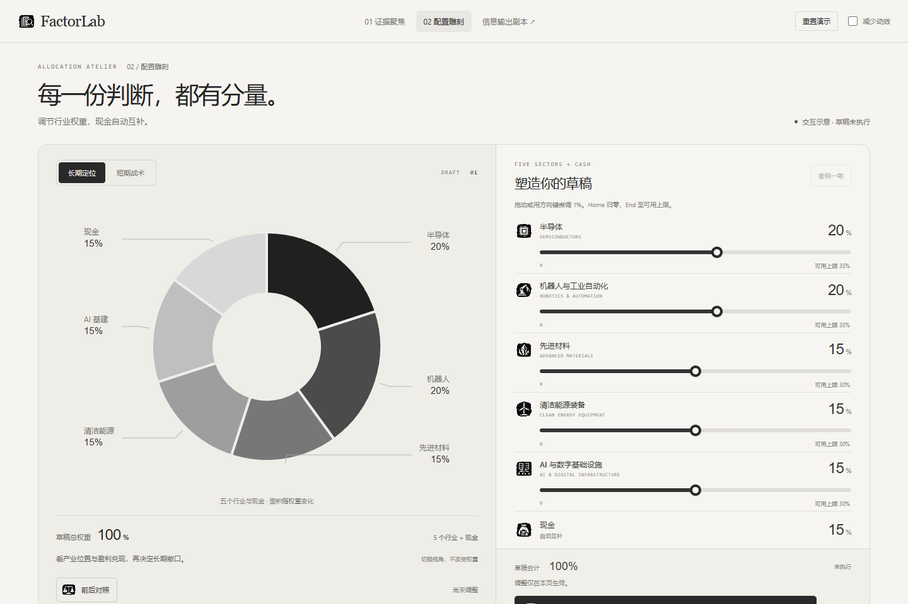
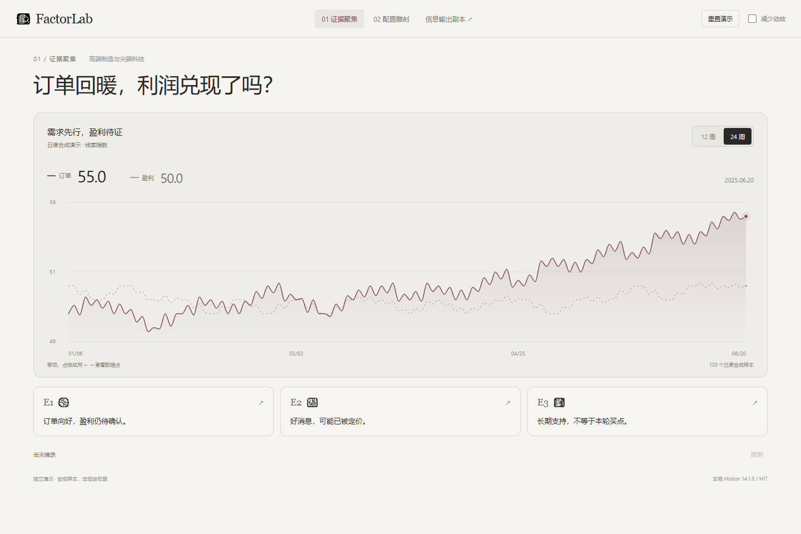

02 / BLACK & WHITE配置雕刻
纯色分瓣 · 中空留白 · 纸灰界面

进入体验 →拖动一个行业，观察圆盘、比例与现金如何一起变化。
试试新的手感 ↗REFINED MATERIALS. CLEARER MESSAGES.
两版交互继续深化。先感受操作，再逐幕检查信息。
纯色分瓣 · 中空留白 · 纸灰界面

进入体验 →拖动一个行业，观察圆盘、比例与现金如何一起变化。
试试新的手感 ↗纸灰底色 · 细密走势 · 游标浮层

进入体验 →点击证据打开弹窗，切换时间段，再移动图表游标。
试试新的节奏 ↗欢迎与登录、研究与因子、六轮事件、结算与反思、存档与主要分支。
按真实源码提取原文 · 动态数据用占位符 · 未实现部分单独标出视觉依据来自本轮提供的三张参考图：分瓣与放射刻度、实体滑条、深色细线图表。Pinterest 短链接未能读取到可核对的动画内容，因此弹窗与分阶段过渡按你的文字描述设计。复用 Motion；不复制参考站点代码或素材。连续动画只表达状态变化，不改变样本数值与配置计算。